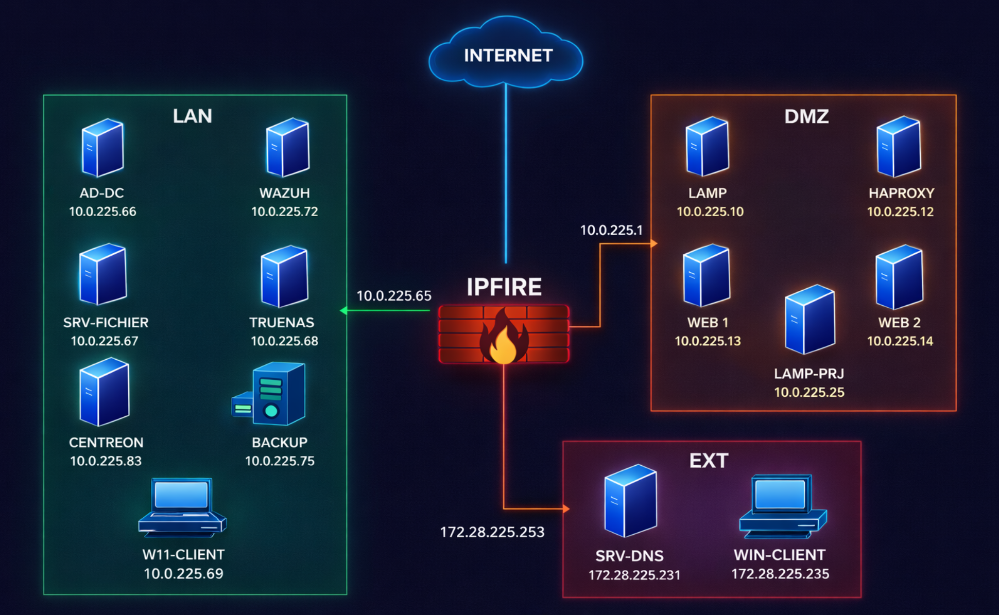

Cette section présente mon profil, mes centres d’intérêt techniques et mes objectifs professionnels.
Actuellement en 2ᵉ année de BTS Services Informatiques aux Organisations,
option Solutions d’Infrastructure, Systèmes et Réseaux (SISR) au lycée Jacques Brel,
je m’intéresse particulièrement à l’administration système, aux infrastructures réseau et à la cybersécurité.
Curieuse et motivée, j’aime comprendre le fonctionnement des systèmes et des réseaux, ainsi que participer
à leur mise en place et à leur sécurisation.
Au cours de ma formation et de mes stages, j’ai développé des compétences en administration systèmes,
configuration d’équipements réseau, support utilisateurs, virtualisation et gestion des incidents.
Je souhaite intégrer une alternance afin de renforcer mes compétences techniques, acquérir une expérience
concrète en entreprise et évoluer vers un profil spécialisé en systèmes, réseaux et cybersécurité, avec pour
objectif de poursuivre mes études jusqu’à un niveau Bac +5.
Mon parcours
Mon parcours académique et les étapes importantes de ma formation.
2024 – 2026
BTS SIO (SISR)
Lycée Jacques Brel, Vénissieux
Spécialisation en administration des systèmes et des réseaux :
gestion des infrastructures, virtualisation et sécurisation des environnements informatiques.
2021 – 2023
DUT Gestion des Organisations et des Destinations Touristiques
École Supérieure de Technologie, Essaouira
Développement de compétences en organisation, communication et travail en équipe.
2020
Baccalauréat Sciences Physiques et Chimie
Lycée Akenssos, Essaouira
Acquisition de bases scientifiques solides, utiles pour l’analyse et la logique technique.
Mes expériences professionnelles
Mes stages en systèmes et réseaux ainsi que mes expériences commerciales et aéroportuaires.
Stage ITJanv. – Févr. 2026
FILORDI
Stage technicienne systèmes et réseaux
Assistance et dépannage informatique pour professionnels et particuliers
Installation et configuration de postes de travail
Support aux utilisateurs et conseils techniques
Stage ITJuin – Juil. 2025
Conseil Départemental de la Nièvre
Stage technicienne systèmes et réseaux
Préparation et remplacement de switchs dans des collèges
Réalisation de recâblage réseau
Utilisation de GLPI pour la gestion des tickets et le support utilisateurs
Contribution à la sécurisation et à l’optimisation de l’infrastructure réseau
Expérience regroupée2022 – 2023
Expériences commerciales & aéroportuaires
GIFI (France) | Royal Air Maroc & ONDA – Essaouira, Maroc
Accueil, conseil et accompagnement des clients et passagers
Gestion des opérations d’enregistrement et d’embarquement
Utilisation de logiciels de réservation et d’enregistrement
Participation aux activités commerciales et à l’organisation du point de vente
Contribution à la fluidité des opérations et à la qualité du service client
Développement de compétences en relation client, organisation et gestion du stress
Infrastructure réseau sécurisée et segmentée
Dans le cadre de ma formation en BTS SIO, j’ai conçu une infrastructure réseau segmentée en trois zones.
Le LAN regroupe les services internes critiques tels que l’Active Directory, le stockage et les outils de supervision.
La DMZ héberge les services exposés comme les serveurs web, afin de limiter les risques pour le réseau interne.
La zone EXT permet l’accès depuis l’extérieur.
L’ensemble est sécurisé par un pare-feu IPFire assurant le filtrage et le contrôle des flux entre les différentes zones.

Mes projets
Projets réalisés dans le cadre de ma formation en systèmes, réseaux et cybersécurité.
Projet 1
Mise en place d’une solution de sauvegarde automatisée du site et des données GSB Frais
🎯 Objectif
L’objectif de ce projet était de mettre en place une solution de sauvegarde automatisée pour un serveur web LAMP afin de protéger à la fois la base de données et les fichiers du site. Cette solution devait permettre d’assurer la continuité de service, limiter les risques de perte de données et renforcer la fiabilité de l’infrastructure.
⚙️ Réalisation
Un serveur LAMP hébergeant l’application GSB Frais a d’abord été mis en place, puis un second serveur Linux a été configuré comme serveur de sauvegarde. Un script Bash a ensuite été développé pour automatiser l’ensemble du processus : extraction de la base de données avec mysqldump, archivage des fichiers du site avec tar, puis transfert des sauvegardes vers le serveur distant via SFTP.
🔐 Sécurité & Architecture
Dans une logique de sécurisation, l’infrastructure a été segmentée entre LAN et DMZ. Le serveur web a été placé en DMZ tandis que le serveur de sauvegarde est resté en LAN. Le pare-feu IPFire a été configuré pour n’autoriser que les flux nécessaires, notamment SSH (port 22) pour le transfert des sauvegardes et ICMP pour les tests réseau.
🧪 Résultats
Les sauvegardes sont exécutées automatiquement chaque jour grâce à cron. Les fichiers générés comprennent des sauvegardes de base de données au format .sql ainsi que des archives du site web au format .tar.gz. Les tests réalisés ont permis de valider le bon fonctionnement du script, du transfert sécurisé et de l’architecture réseau mise en place.
🛠️ Compétences développées
Administration LinuxAutomatisationGestion des sauvegardesSécurisation des infrastructuresOrganisation des servicesCybersécurité
Veille technologique — Sécurité dans le Cloud
Dans quelle mesure les environnements cloud, devenus essentiels pour les entreprises,
peuvent-ils garantir la sécurité des données face à l’évolution des cybermenaces ?
Aujourd’hui, le cloud est devenu indispensable pour les entreprises, notamment pour le stockage et l’accès aux données à distance. Il offre de nombreux avantages en termes de flexibilité, de performance et de collaboration. Cependant, cette évolution s’accompagne de nouveaux risques liés à la cybersécurité.
Les principales menaces proviennent souvent d’erreurs humaines, de mauvaises configurations ou d’un manque de contrôle des accès. Face à ces risques, les entreprises doivent mettre en place des solutions adaptées comme l’authentification multi-facteurs, le chiffrement des données ou encore des modèles de sécurité comme le Zero Trust.
Ainsi, la sécurité dans le cloud repose sur une combinaison de bonnes pratiques techniques et organisationnelles. Elle est aujourd’hui un enjeu majeur pour garantir la protection des données et la continuité des activités.
Tableau de compétences
Ce tableau présente l’ensemble des compétences développées au cours de ma formation,
à travers mes projets et mes expériences professionnelles.
Tableau de synthèse des réalisations professionnelles
Remplacement et préparation de switchs dans des collèges
Contexte
Dans le cadre de mon stage au Conseil Départemental de la Nièvre, j’ai participé à des
interventions techniques dans plusieurs collèges afin d’assurer le remplacement et la
préparation d’équipements réseau.
Mission réalisée
Ma première mission a consisté à remplacer plusieurs switchs dans différents emplacements
d’un établissement : un switch dans le bureau de l’administrateur, trois switchs dans une
salle de classe et deux switchs dans une autre salle. Après chaque remplacement, j’ai
effectué le recâblage des baies informatiques afin d’assurer un fonctionnement optimal du
réseau et une meilleure organisation des câbles.
En parallèle, j’ai également préparé des switchs destinés à être installés dans d’autres
collèges du département. Cette préparation comprenait le déballage, la vérification du
matériel et la configuration de base avant déploiement.
Réalisations techniques
J’ai réalisé la connexion aux switchs via l’interface console avec PuTTY pour effectuer la
configuration initiale. J’ai ensuite accédé à l’interface de gestion Aruba afin de configurer
les VLAN, les adresses IP et les ports réseau selon les besoins de l’établissement.
J’ai également participé à la création et à la configuration des VLAN en fonction des plans
réseau et des usages, comme les VLAN administratifs, pédagogiques ou Wi-Fi. Une adresse IP
a été attribuée aux switchs, avec ajout d’une route par défaut, puis la configuration a été
sauvegardée afin d’assurer sa conservation après redémarrage.
Enfin, j’ai participé à la préparation des câbles réseau ainsi qu’à leur étiquetage avant
l’installation des switchs dans les établissements.
Compétences développées
Remplacement et installation de switchs
Recâblage de baies informatiques
Configuration initiale via console
Paramétrage VLAN et adressage IP
Préparation de matériel réseau
Organisation et étiquetage des câbles
Bilan
Cette mission m’a permis de manipuler des équipements réseau dans un environnement réel,
de mieux comprendre la logique de segmentation d’un réseau et de participer concrètement à
la préparation et au déploiement d’infrastructures dans des établissements scolaires.
Préparation et remise en service d’un parc informatique
Contexte
Dans le cadre de mon stage chez Filordi, j’ai participé à une intervention technique visant
à réorganiser et remettre en service le matériel informatique d’une entreprise. Cette mission
avait pour objectif d’assurer le bon fonctionnement des équipements et d’améliorer
l’organisation de l’infrastructure.
Mission réalisée
Au cours de cette intervention, j’ai participé au remplacement et au déplacement de plusieurs
équipements informatiques. Cette opération a consisté à déconnecter l’ensemble du matériel,
puis à le réinstaller dans un nouvel espace en réalisant un recâblage complet.
J’ai également assisté à la préparation d’ordinateurs destinés à être remis en service,
notamment par l’installation du système d’exploitation Windows et la configuration des
logiciels nécessaires.
Activités réalisées
Débranchement et déplacement du matériel informatique
Recâblage des postes et organisation des connexions
Installation du système d’exploitation Windows
Installation de logiciels de base
Nettoyage et optimisation des ordinateurs
Vérification du bon fonctionnement des équipements
Compétences développées
Installation et configuration de postes informatiques
Organisation et gestion du matériel
Diagnostic simple de pannes
Méthodologie d’intervention technique
Travail en équipe
Bilan
Cette mission m’a permis de participer à une intervention concrète en entreprise et de mieux
comprendre les étapes nécessaires à la remise en service d’un parc informatique. Elle m’a
également permis de développer mes compétences techniques de base ainsi que mon sens de
l’organisation.